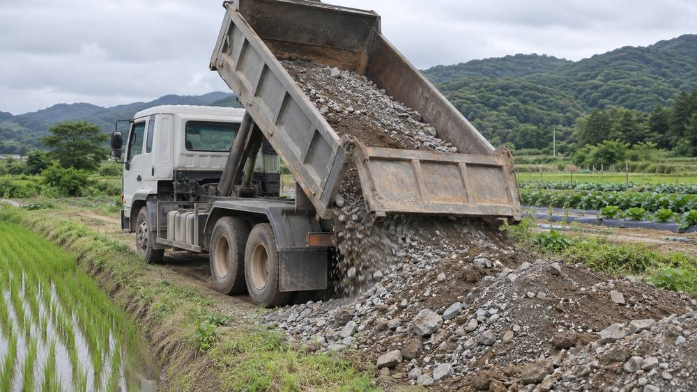
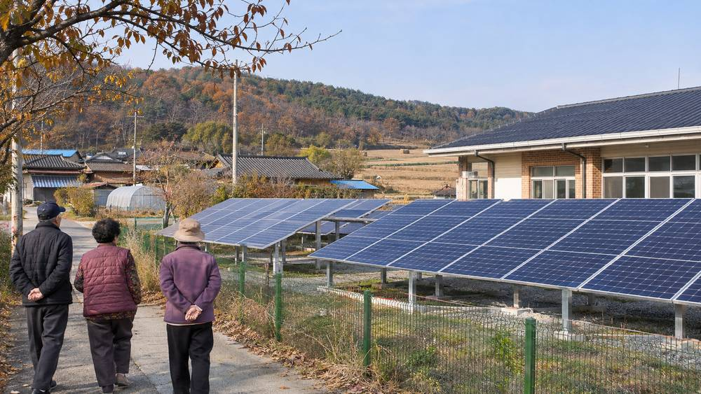

사회
사회
하수처리장 방류수 질소를 하루 전에 예측해 전력비 10% 절감 기대…부산 강변하수처리장 등 수질원격감시 우수사례 4곳
기후부·한국환경공단 선정, 4곳 중 3곳이 인공지능 예측 모형 / 광주 평동3차 공공폐수처리시설은 약품 61% 덜 써 누적 1억2,000만 원 절감 기대

사회
재활용 골재로 농지·산지 성토 금지, 폐기물관리법 개정안
김태선 의원 등 11명이 낸 법안으로, 어기면 7년 이하 징역이나 7,000만 원 이하 벌금이고 사용 전 시·도지사나 시장·군수·구청장에게 보고해야 한다. 11월 22일까지 입법예고.

사회
상주 규모 3.6 지진, 54km 떨어진 연구용 원자로 계측값 0.0010g…원전 중엔 한빛이 0.0031g로 가장 커
원안위 "내진설계값 0.2g보다 낮고 현장 점검도 이상 없어" / 진앙 반경 30km, 1978년 이후 규모 2.0 이상 52번·1978년엔 규모 5.2

사회
협동조합·사회적기업이 함께 쓰는 '혁신허브' 6곳…청도는 옛 보건소, 칠곡은 공공구매 연결
행안부, 고양·안성·청도·칠곡·부여·홍성 선정…민관협의체가 운영 모형 짠다 / 「사회연대경제기본법」 2027년 3월 16일 시행 앞둬

사회
베란다 태양광 지자체 수요 1만3,629가구, 정부 목표 10만 가구의 13.6%
한국에너지공단 7월 조사에서 56개 지자체 참여 의사, 필요 국비 약 39억 원은 추경 375억 원의 10.4%

사회
대전시, 세계태양광총회 개막 기념 시민 에너지 걷기 열어 사전 신청 1,500명 참여
대전엑스포시민광장에서 한밭수목원까지 QR 미션 4개, 에너지 OX 퀴즈와 체험 6종은 DCC에서 진행

사회 · 해외
호주 농촌 마을 3곳 연구, 재생에너지엔 찬성하나 협의·이익공유는 불공평하다는 인식
청정에너지협의회 집계 141개 사업 325억 호주달러 진행 중…빅토리아주는 6월 12일 주민 참여 지침 발표

사회
송전선로 지원금 3분의 2 이내 주변 지역에 배분…주민설명회 2회에서 3회로
기후에너지환경부, 12월 1일까지 입법·행정예고…주민이 낸 대안 경과지도 입지선정위원회 심의 대상

사회
서울시의회 오중석 의원, SH 임대단지 태양광 요금상계 현황 공개 요구
LH는 세종 행복주택 238가구에서 요금상계를 시작했고 SH 고덕 온빛채 697가구는 제로에너지건축물 3등급 단지다

사회
사회적기업 국제포럼에 주민 운영 마을 태양광 사례 올라, 국내외 8개 사례 중 태양광은 하나
고용노동부와 한국사회적기업진흥원이 11월 10일(화) 서울에서 연 포럼, 사회적기업육성법 시행 19년 맞아 돌봄·주거·에너지 경험 공유

시민이 만들고 지역이 소유하는 에너지 전환제4섹터 방식 시민주도 지역에너지 공공개발